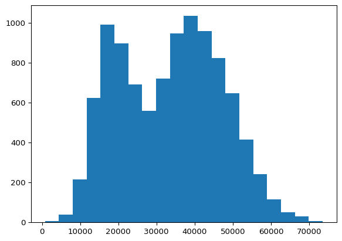
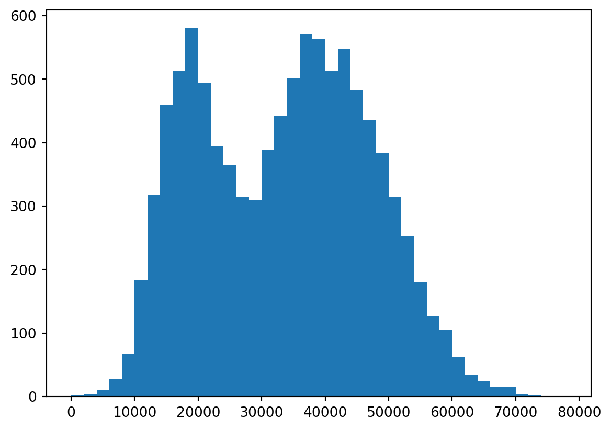
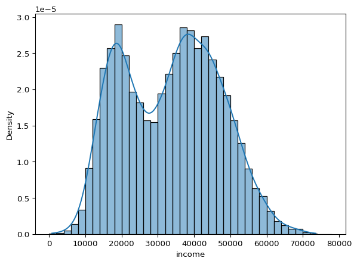
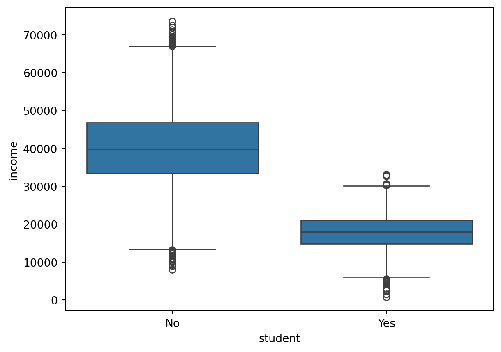
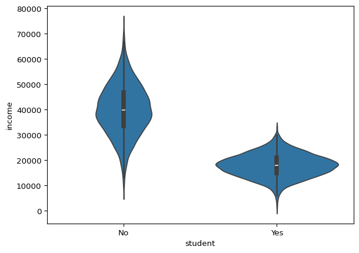
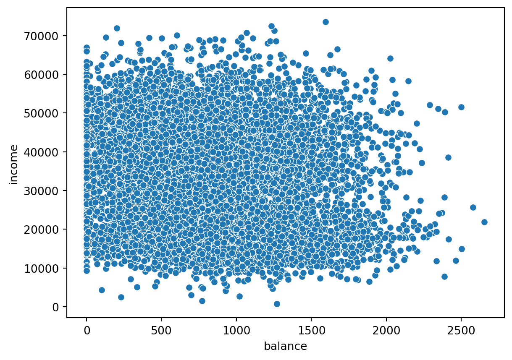
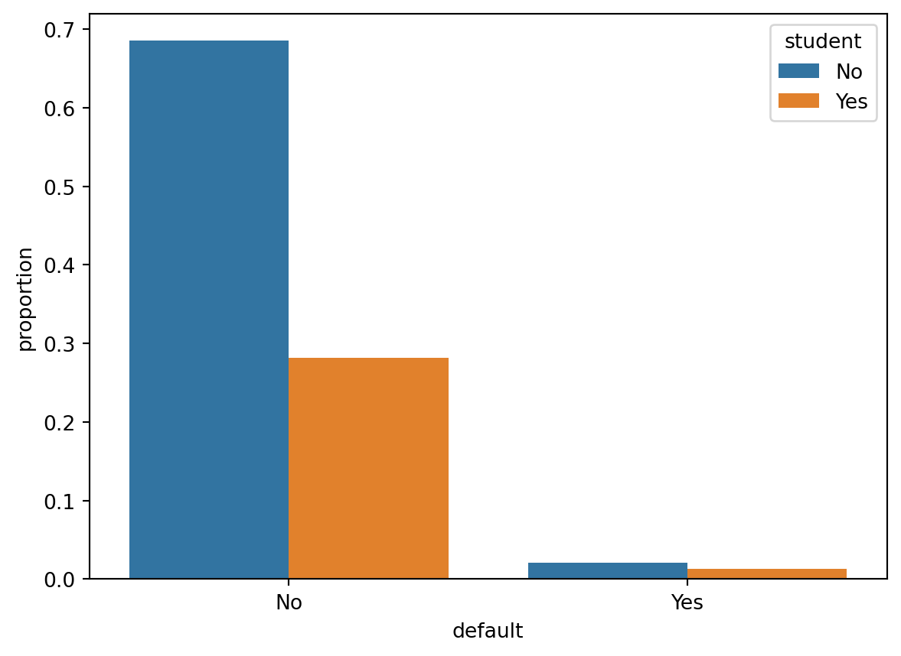
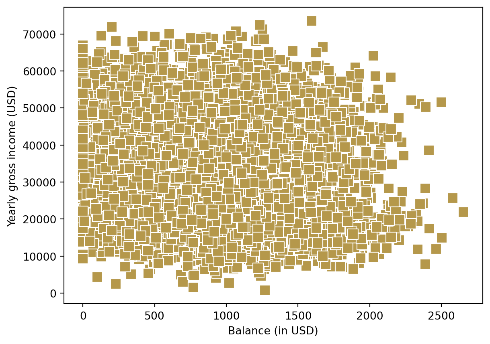

import matplotlib.pyplot as plt
import seaborn as sns
import numpy as np
import pandas as pd
default = pd.read_csv("https://raw.githubusercontent.com/holleland/TECH3/refs/heads/main/data/Default.csv",
sep = ";")Plotting tools
Slides for “Plotting tools”
Controll questions
- What is the difference between a bar plot and a histogram?
- What is the horizontal line inside the box of a boxplot?
- What do we call the height of the box in a boxplot?
- What plot would you use for illustrating dependence between two continuous (numeric) variables?
- What is a time plot?
Visualization in Python
We continue using the default dataset:
Data visualization in Python is usually done either using the matplotlib.pyplot (plt) library or seaborn (sns). Seaborn builds on matplotlib and many may find that it is easier to get nice looking grapghics using seaborn than with matplotlib, but this may depend on your own python programming level and preferences. I often like to start out using seaborn and then use matplotlib to add features to the figure or making graphical adjustments.
Histogram
A histogram can be plotted using the matplotlib:
plt.hist(default["income"]);
plt.show(); # print figure
When making a histogram, the most relevant element to tweak is perhaps the bins. This can be done by either changing the number of bins or the bin width.
plt.hist(default["income"], bins = 20);
plt.show(); # print figure
By increasing the number of bins to 20, we now see clearer the two tops in the income distribution. We can also specify the bins as a vector if we want the splits to occur at specfic locations, e.g. every 2000 dollars, by the following code.
bins = np.arange(start=0, stop=80000, step=2000)
plt.hist(default["income"], bins=bins);
plt.show();
Note that the y-axis here shows the frequency of observations in each bin. It is often relevant to change this to a relative frequency instead:
plt.hist(default["income"], bins = bins, density = True);
plt.show(); # print figure
We can do this similarly using seaborn:
sns.histplot(x = "income",
data = default,
bins = bins,
stat = "density");
plt.show();
Some may prefer this syntax of feeding the function a data object and specifying which column to use for the plot. We can also add a kernel density estimate (smoothed version of a histogram) on top of the histogram by the kde argument.
sns.histplot(x = "income",
data = default,
bins = bins,
stat = "density",
kde = True);
plt.show();
Boxplot and violin plot
Boxplot is a useful way of visualizing data.
sns.boxplot(x = "income", data = default);
plt.show();
Especially, if you are going to compare a continuous variable (income) for different groups (students vs nonstudents):
sns.boxplot(x = "student", y = "income", data = default);
plt.show();
Alternatively, we can achieve the same thing using a violin plot:
sns.violinplot(x = "student", y = "income", data = default);
plt.show();
Scatterplot
Scatterplots are useful when you want to visualize the dependence structure of two continous variables, say balance and income in the default dataset.
sns.scatterplot(x="balance", y = "income", data = default);
plt.show();
In this case, it does not seem to be a very strong relationship between the two variables.
Bar/count plot
Bar plots is a very useful way of visualizing counts or frequencies. Most graphical functions also allow you to split the plots by some grouping variable using different colors. This is done using the hue argument. In this case, we want to show the frequency of people that defaulted (default = “Yes”) or not (“No”), coloring the bars by their student status (“Yes” = student, “No” = nonstudent).
sns.countplot(x= "default",
data =default,
stat="proportion",
hue = "student");
plt.show();
Personalize your figures!
It is important to make your graphics look good, informative and professional. The basic figure you get by using default options can be quite good, but often you may want to personalize it further. This can mean e.g. changing axis labels, adding a title, changing how the markers look, changing line widths or size of points, etc. There are lots of options you can bend and tweak when making these kinds of figures to make them look pretty and informative.
Let us use the scatterplot from above as an example. Say I want to change the axis titles:
sns.scatterplot(x="balance", y = "income", data = default);
plt.xlabel("Balance (in USD)")
plt.ylabel("Yearly gross income (USD)")
plt.show();
I may also want to change how the points of the scatterplot is presented:
sns.scatterplot(x="balance",
y = "income",
data = default,
color = "#B5984B", # change color
marker = "s", # Change marker
s=100); # Change size of points
plt.xlabel("Balance (in USD)");
plt.ylabel("Yearly gross income (USD)");
plt.show();
or perhaps I would like to color the points by their student status:
sns.scatterplot(x="balance",
y = "income",
data = default,
hue = "student",
marker = "x") ;
plt.xlabel("Balance (in USD)");
plt.ylabel("Yearly gross income (USD)");
plt.show();
There are endless options. Check out the website for the seaborn package for more inspiration. It is also always a good idea to have a look the the help files for the functions for seeing more of the arguments you can play with when making graphics. Especially, this seaborn tutorial can be useful to have a look at.